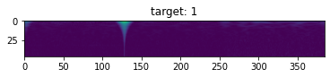
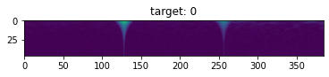
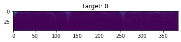
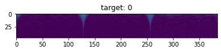
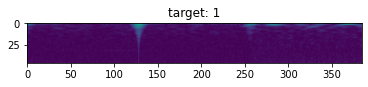
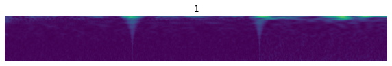
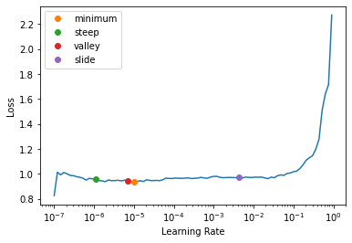

Code
%reload_ext autoreload
%autoreload 2
%matplotlib inlineSatyabrata pal
October 12, 2021
Experiment to weave nnaudio, timm and fastai together
👉 Extend Fastai for signal processing and time series:
* To use nnAudio for faster processing than librosa or other signal/audio processing methods.
* To deal with time series data as images.
* To deal with cosmological data like gravitational waves.1👉 Create custom Transform.
👉 Create custom block.
👉 Create a dataloader.
👉 Create a custom model with models from the timm library.
👉 Create custom learner.
👉 Spacy
👉 Fastai
👉 nnAudio
👉 timm
Looking in links: https://download.pytorch.org/whl/torch_stable.html
Collecting torch==1.9.0+cu111
Downloading https://download.pytorch.org/whl/cu111/torch-1.9.0%2Bcu111-cp37-cp37m-linux_x86_64.whl (2041.3 MB)
|████████████████████████████████| 2041.3 MB 3.1 kB/s
Collecting torchvision==0.10.0+cu111
Downloading https://download.pytorch.org/whl/cu111/torchvision-0.10.0%2Bcu111-cp37-cp37m-linux_x86_64.whl (23.2 MB)
|████████████████████████████████| 23.2 MB 28.8 MB/s
Collecting torchaudio==0.9.0
Downloading torchaudio-0.9.0-cp37-cp37m-manylinux1_x86_64.whl (1.9 MB)
|████████████████████████████████| 1.9 MB 607 kB/s
Requirement already satisfied: typing-extensions in /opt/conda/lib/python3.7/site-packages (from torch==1.9.0+cu111) (3.7.4.3)
Requirement already satisfied: numpy in /opt/conda/lib/python3.7/site-packages (from torchvision==0.10.0+cu111) (1.19.5)
Requirement already satisfied: pillow>=5.3.0 in /opt/conda/lib/python3.7/site-packages (from torchvision==0.10.0+cu111) (8.2.0)
Installing collected packages: torch, torchvision, torchaudio
Attempting uninstall: torch
Found existing installation: torch 1.7.1+cu110
Uninstalling torch-1.7.1+cu110:
Successfully uninstalled torch-1.7.1+cu110
Attempting uninstall: torchvision
Found existing installation: torchvision 0.8.2+cu110
Uninstalling torchvision-0.8.2+cu110:
Successfully uninstalled torchvision-0.8.2+cu110
Attempting uninstall: torchaudio
Found existing installation: torchaudio 0.7.2
Uninstalling torchaudio-0.7.2:
Successfully uninstalled torchaudio-0.7.2
ERROR: pip's dependency resolver does not currently take into account all the packages that are installed. This behaviour is the source of the following dependency conflicts.
torchtext 0.8.1 requires torch==1.7.1, but you have torch 1.9.0+cu111 which is incompatible.
fastai 2.2.7 requires torch<1.8,>=1.7.0, but you have torch 1.9.0+cu111 which is incompatible.
fastai 2.2.7 requires torchvision<0.9,>=0.8, but you have torchvision 0.10.0+cu111 which is incompatible.
Successfully installed torch-1.9.0+cu111 torchaudio-0.9.0 torchvision-0.10.0+cu111
WARNING: Running pip as the 'root' user can result in broken permissions and conflicting behaviour with the system package manager. It is recommended to use a virtual environment instead: https://pip.pypa.io/warnings/venv::: {.cell _kg_hide-input=‘true’ _kg_hide-output=‘true’ execution=‘{“iopub.execute_input”:“2021-10-01T09:42:35.698110Z”,“iopub.status.busy”:“2021-10-01T09:42:35.697293Z”,“iopub.status.idle”:“2021-10-01T09:42:46.806039Z”,“shell.execute_reply”:“2021-10-01T09:42:46.805491Z”,“shell.execute_reply.started”:“2021-10-01T09:04:05.909260Z”}’ papermill=‘{“duration”:12.087095,“end_time”:“2021-10-01T09:42:46.806171”,“exception”:false,“start_time”:“2021-10-01T09:42:34.719076”,“status”:“completed”}’ tags=‘[]’ execution_count=4}
Collecting fastai==2.5.2
Downloading fastai-2.5.2-py3-none-any.whl (186 kB)
|████████████████████████████████| 186 kB 15 kB/s
Requirement already satisfied: scipy in /opt/conda/lib/python3.7/site-packages (from fastai==2.5.2) (1.7.1)
Requirement already satisfied: packaging in /opt/conda/lib/python3.7/site-packages (from fastai==2.5.2) (21.0)
Requirement already satisfied: pyyaml in /opt/conda/lib/python3.7/site-packages (from fastai==2.5.2) (5.4.1)
Requirement already satisfied: matplotlib in /opt/conda/lib/python3.7/site-packages (from fastai==2.5.2) (3.4.3)
Requirement already satisfied: requests in /opt/conda/lib/python3.7/site-packages (from fastai==2.5.2) (2.25.1)
Requirement already satisfied: pip in /opt/conda/lib/python3.7/site-packages (from fastai==2.5.2) (21.2.4)
Requirement already satisfied: torchvision>=0.8.2 in /opt/conda/lib/python3.7/site-packages (from fastai==2.5.2) (0.10.0+cu111)
Requirement already satisfied: pillow>6.0.0 in /opt/conda/lib/python3.7/site-packages (from fastai==2.5.2) (8.2.0)
Collecting fastdownload<2,>=0.0.5
Downloading fastdownload-0.0.5-py3-none-any.whl (13 kB)
Requirement already satisfied: spacy<4 in /opt/conda/lib/python3.7/site-packages (from fastai==2.5.2) (2.3.7)
Requirement already satisfied: scikit-learn in /opt/conda/lib/python3.7/site-packages (from fastai==2.5.2) (0.23.2)
Requirement already satisfied: torch<1.10,>=1.7.0 in /opt/conda/lib/python3.7/site-packages (from fastai==2.5.2) (1.9.0+cu111)
Requirement already satisfied: pandas in /opt/conda/lib/python3.7/site-packages (from fastai==2.5.2) (1.2.5)
Requirement already satisfied: fastprogress>=0.2.4 in /opt/conda/lib/python3.7/site-packages (from fastai==2.5.2) (1.0.0)
Requirement already satisfied: fastcore<1.4,>=1.3.8 in /opt/conda/lib/python3.7/site-packages (from fastai==2.5.2) (1.3.26)
Requirement already satisfied: numpy in /opt/conda/lib/python3.7/site-packages (from fastprogress>=0.2.4->fastai==2.5.2) (1.19.5)
Requirement already satisfied: blis<0.8.0,>=0.4.0 in /opt/conda/lib/python3.7/site-packages (from spacy<4->fastai==2.5.2) (0.7.4)
Requirement already satisfied: murmurhash<1.1.0,>=0.28.0 in /opt/conda/lib/python3.7/site-packages (from spacy<4->fastai==2.5.2) (1.0.5)
Requirement already satisfied: preshed<3.1.0,>=3.0.2 in /opt/conda/lib/python3.7/site-packages (from spacy<4->fastai==2.5.2) (3.0.5)
Requirement already satisfied: wasabi<1.1.0,>=0.4.0 in /opt/conda/lib/python3.7/site-packages (from spacy<4->fastai==2.5.2) (0.8.2)
Requirement already satisfied: thinc<7.5.0,>=7.4.1 in /opt/conda/lib/python3.7/site-packages (from spacy<4->fastai==2.5.2) (7.4.5)
Requirement already satisfied: plac<1.2.0,>=0.9.6 in /opt/conda/lib/python3.7/site-packages (from spacy<4->fastai==2.5.2) (1.1.3)
Requirement already satisfied: cymem<2.1.0,>=2.0.2 in /opt/conda/lib/python3.7/site-packages (from spacy<4->fastai==2.5.2) (2.0.5)
Requirement already satisfied: setuptools in /opt/conda/lib/python3.7/site-packages (from spacy<4->fastai==2.5.2) (57.4.0)
Requirement already satisfied: catalogue<1.1.0,>=0.0.7 in /opt/conda/lib/python3.7/site-packages (from spacy<4->fastai==2.5.2) (1.0.0)
Requirement already satisfied: tqdm<5.0.0,>=4.38.0 in /opt/conda/lib/python3.7/site-packages (from spacy<4->fastai==2.5.2) (4.62.1)
Requirement already satisfied: srsly<1.1.0,>=1.0.2 in /opt/conda/lib/python3.7/site-packages (from spacy<4->fastai==2.5.2) (1.0.5)
Requirement already satisfied: importlib-metadata>=0.20 in /opt/conda/lib/python3.7/site-packages (from catalogue<1.1.0,>=0.0.7->spacy<4->fastai==2.5.2) (3.4.0)
Requirement already satisfied: zipp>=0.5 in /opt/conda/lib/python3.7/site-packages (from importlib-metadata>=0.20->catalogue<1.1.0,>=0.0.7->spacy<4->fastai==2.5.2) (3.5.0)
Requirement already satisfied: typing-extensions>=3.6.4 in /opt/conda/lib/python3.7/site-packages (from importlib-metadata>=0.20->catalogue<1.1.0,>=0.0.7->spacy<4->fastai==2.5.2) (3.7.4.3)
Requirement already satisfied: urllib3<1.27,>=1.21.1 in /opt/conda/lib/python3.7/site-packages (from requests->fastai==2.5.2) (1.26.6)
Requirement already satisfied: chardet<5,>=3.0.2 in /opt/conda/lib/python3.7/site-packages (from requests->fastai==2.5.2) (4.0.0)
Requirement already satisfied: certifi>=2017.4.17 in /opt/conda/lib/python3.7/site-packages (from requests->fastai==2.5.2) (2021.5.30)
Requirement already satisfied: idna<3,>=2.5 in /opt/conda/lib/python3.7/site-packages (from requests->fastai==2.5.2) (2.10)
Requirement already satisfied: pyparsing>=2.2.1 in /opt/conda/lib/python3.7/site-packages (from matplotlib->fastai==2.5.2) (2.4.7)
Requirement already satisfied: kiwisolver>=1.0.1 in /opt/conda/lib/python3.7/site-packages (from matplotlib->fastai==2.5.2) (1.3.1)
Requirement already satisfied: python-dateutil>=2.7 in /opt/conda/lib/python3.7/site-packages (from matplotlib->fastai==2.5.2) (2.8.0)
Requirement already satisfied: cycler>=0.10 in /opt/conda/lib/python3.7/site-packages (from matplotlib->fastai==2.5.2) (0.10.0)
Requirement already satisfied: six in /opt/conda/lib/python3.7/site-packages (from cycler>=0.10->matplotlib->fastai==2.5.2) (1.15.0)
Requirement already satisfied: pytz>=2017.3 in /opt/conda/lib/python3.7/site-packages (from pandas->fastai==2.5.2) (2021.1)
Requirement already satisfied: joblib>=0.11 in /opt/conda/lib/python3.7/site-packages (from scikit-learn->fastai==2.5.2) (1.0.1)
Requirement already satisfied: threadpoolctl>=2.0.0 in /opt/conda/lib/python3.7/site-packages (from scikit-learn->fastai==2.5.2) (2.2.0)
Installing collected packages: fastdownload, fastai
Attempting uninstall: fastai
Found existing installation: fastai 2.2.7
Uninstalling fastai-2.2.7:
Successfully uninstalled fastai-2.2.7
Successfully installed fastai-2.5.2 fastdownload-0.0.5
WARNING: Running pip as the 'root' user can result in broken permissions and conflicting behaviour with the system package manager. It is recommended to use a virtual environment instead: https://pip.pypa.io/warnings/venv:::
Collecting timm
Downloading timm-0.4.12-py3-none-any.whl (376 kB)
|████████████████████████████████| 376 kB 607 kB/s
Requirement already satisfied: torchvision in /opt/conda/lib/python3.7/site-packages (from timm) (0.10.0+cu111)
Requirement already satisfied: torch>=1.4 in /opt/conda/lib/python3.7/site-packages (from timm) (1.9.0+cu111)
Requirement already satisfied: typing-extensions in /opt/conda/lib/python3.7/site-packages (from torch>=1.4->timm) (3.7.4.3)
Requirement already satisfied: numpy in /opt/conda/lib/python3.7/site-packages (from torchvision->timm) (1.19.5)
Requirement already satisfied: pillow>=5.3.0 in /opt/conda/lib/python3.7/site-packages (from torchvision->timm) (8.2.0)
Installing collected packages: timm
Successfully installed timm-0.4.12
WARNING: Running pip as the 'root' user can result in broken permissions and conflicting behaviour with the system package manager. It is recommended to use a virtual environment instead: https://pip.pypa.io/warnings/venvCollecting nnaudio
Downloading nnAudio-0.2.6-py3-none-any.whl (30 kB)
Installing collected packages: nnaudio
Successfully installed nnaudio-0.2.6
WARNING: Running pip as the 'root' user can result in broken permissions and conflicting behaviour with the system package manager. It is recommended to use a virtual environment instead: https://pip.pypa.io/warnings/venv#export
from typing import Tuple
from collections import namedtuple
from nnAudio.Spectrogram import CQT
from timm import create_model, list_models
from pandas.core.frame import DataFrame
from fastcore.foundation import *
from fastai.vision.all import *
from fastai.torch_core import show_image
from fastai.vision.learner import _update_first_layerI will try to grab all the numpy files inside train folder
Training labels are in the ‘training_labels.csv’ file.
Get numpy files in path recursively, only in folders, if specified.
The “#export” in the function below and all the rest of the functions/code are there to help me use nbdev to export the required code into a library later.
I am using the previous function to get all the files under the train folder.
CPU times: user 5.74 s, sys: 2.23 s, total: 7.97 s
Wall time: 2min 1sJust a quick test to see if we got the correct files.
(#2) [Path('../input/g2net-gravitational-wave-detection/train/7/7/7/777d746e90.npy'),Path('../input/g2net-gravitational-wave-detection/train/7/7/7/777ecfbd65.npy')]Picking labels from the dataframe. We may need these labels later.
To make things easier I will try to map the file paths to their respective labels and create a datafrane out of it.
CPU times: user 2.07 s, sys: 0 ns, total: 2.07 s
Wall time: 2.07 sWe will design a function that would get the q transform of the time series on the fly using nnaudio. The result will be similar to converting the time series data into images.
Code taken from notebook shared by Y.Nakama
NOTE
Remember to set verbose False if you don’t want all the string output to be displayed everytime dataloader loads the data.
Quick test to see if this works.
CPU times: user 20.5 ms, sys: 957 µs, total: 21.5 ms
Wall time: 26.3 ms/opt/conda/lib/python3.7/site-packages/nnAudio/utils.py:326: SyntaxWarning: If fmax is given, n_bins will be ignored
warnings.warn('If fmax is given, n_bins will be ignored',SyntaxWarning)tensor([[[0.3868, 0.3814, 0.3670, ..., 0.1262, 0.1258, 0.1258],
[0.3012, 0.2917, 0.2653, ..., 0.1504, 0.1565, 0.1585],
[0.2445, 0.2453, 0.2446, ..., 0.0945, 0.0961, 0.0965],
...,
[0.0027, 0.0040, 0.0072, ..., 0.0018, 0.0076, 0.0014],
[0.0027, 0.0040, 0.0120, ..., 0.0012, 0.0061, 0.0126],
[0.0039, 0.0140, 0.0172, ..., 0.0010, 0.0064, 0.0160]]])




CPU times: user 5.37 s, sys: 391 ms, total: 5.77 s
Wall time: 5.23 sCool! so we are able to plot the images now. IT is fast too.
If you want to use fastai’s learner to train your model on the transfomed spectograms, you can do so by creating a custom Dataset in pytorch and then feeding that dataset with a dataloader to fastai’s learner. However, if you create a pipeline using fastai’s internals then you get to use some cool functionalities out-of-box. We will see that in a while.
All the code below are very heavily insipired by the original inspiration of this notebook (see the very first section), this post by Wayde Gilliam and the fastai siamese tutorial.
#export
def get_waves(f):
"""read numpy file, stack the timeseries and convert those into a tensor"""
waves = np.load(f)
waves = np.hstack(waves)
waves = waves / np.max(waves)
waves = torch.from_numpy(waves).float()
return waves
def create_spectrogram(x: Path):
"""Create an AudioSpectrogram from a torch tensor"""
waves = get_waves(x)
return qtfm()(waves)First of all, we are going to create an “Image type” for our transformed object (it’s the numpy data transformed into spectrogram).
We have to do this because our data is not an image data from get-go. Rather it’s a signal data which we are transforming into an Image. So, to tell fastai that this is a custom Image type which we are dealing with and ho we should be displaying it, we have to create an Image type.
tensor([[[0.3868, 0.3814, 0.3670, ..., 0.1262, 0.1258, 0.1258],
[0.3012, 0.2917, 0.2653, ..., 0.1504, 0.1565, 0.1585],
[0.2445, 0.2453, 0.2446, ..., 0.0945, 0.0961, 0.0965],
...,
[0.0027, 0.0040, 0.0072, ..., 0.0018, 0.0076, 0.0014],
[0.0027, 0.0040, 0.0120, ..., 0.0012, 0.0061, 0.0126],
[0.0039, 0.0140, 0.0172, ..., 0.0010, 0.0064, 0.0160]]])You can create a Dataset in fastai by creating a custom Transform . Creating a Transform has come advantages as compared to a pytorch Dataset. For example, you don’t need to have a len component or a get_item component.
On a very high level a Transform has an encodes, decodes and setup methods. For our purpose having an encodes methods only would suffice. This is the place where we would be transforming the numpy data into spectograms.
To know more about Tranforms refer these –> * data block nirvana * Siamese tutorial * Fastbook chapter-11 * Albumentation tutorial
CPU times: user 9.73 ms, sys: 0 ns, total: 9.73 ms
Wall time: 9.74 msCPU times: user 12.7 ms, sys: 0 ns, total: 12.7 ms
Wall time: 12.8 msCPU times: user 13 µs, sys: 5 µs, total: 18 µs
Wall time: 21.5 µs1combining all above steps
#export
#ItemTransform let's you work with tuple elements
class NNAudioTransform(ItemTransform):
"""Custom Transform which uses nnAudio transforms
to extract spectogram on the fly"""
def __init__(self, df: DataFrame, col: str = 'target'):
self.lbl2files = mapxy(df)
vals = df[col].to_list()
self.vocab,self.o2i = uniqueify(vals, sort=True, bidir=True)
def encodes(self, o): return (create_spectrogram(o), self.o2i.get(self.lbl2files.get(o)))
def decodes(self, x): return AudioImage(x[0],self.vocab[x[1]])Let’s walk through the code.
If you inherit from the Transform class, the resulting transform is applied to the item as a whole but when you inherit from the ItemTransform class then the resulting transform is applied to each element of the input.
For example, if you have a transform that is inherited from the Transform class and you have an input which is a tuple ("a", 1) then the transform would consider the tuple as a single element. But, when your transform is an ItemTransform then the transform is applied to “a” as well as “1” separately.
The init method sets up our mapxy method as a class property. It then converts the target column values into a list and creates a vocab of our targets and a dictionary mapping our targets to indices.
The encodes method is where the magic occurs. Here, we return a tuple with our spectogram and the label related to our input.
The decodes method returns an AudioImage type which knows how to show itself whenever a show method is invoked.
You might notice that I have used a dataframe to create a list of our inputs and a dictionary of our labels. This was an engineering choice which I made because creating a list of labels from the input list of filenames was too slow. Doing it this was by using a dataframe made things faster.
In deep learning a majority chunk of the speed boost comes from good engineering practices rather than having the best SOTA architectures or a faster computer.
We will also use a ‘splitter’ which tells fastai the way we want to split our data. For now we will use RandomSplitter to do this job. Additionally we will also instantiate the NNAudioTransform object.
We will take a few samples only to make our experiment quicker.
The tfm is a transform is would be applied to the input files to generate the spectogram. The second list has the transform which will be applied to our targets.
Next, we have to tell fastai to take our ‘sample’ and apply the transform and the splitter to it.
CPU times: user 85 ms, sys: 278 µs, total: 85.3 ms
Wall time: 105 msTfmdLists is a low-level API which creates a pipeline for us. It creates a pipeline that takes in our samples–>splits it –> applies our transform to the items.
More information on a TfmdLists can be found in this tutorial fromt he official documentation.
We can use the TfmdLists to create a dataloader by calling dataloaders(). Here, we can’t apply item_tfms or batch_tfms but we can get the hooks to different point of the pipeline and can put our transforms there.
For example, once items are grabbed then that moment is known as “after_item”. We can use this hook to apply our transforms once items are grabbed.
One more thing that we need to do is to make the show_batch method aware of the type of our Image. This can be easily done by using typedispatch to dispatch our show_batch (the one which we will override with our image type).
#export
@typedispatch
def show_batch(x:AudioImage, y, samples, ctxs=None, max_n=6, nrows=None, ncols=3, figsize=None, **kwargs):
if figsize is None: figsize = (ncols*6, max_n//ncols * 3)
if ctxs is None: ctxs = get_grid(min(x[0].shape[0], max_n), nrows=None, ncols=ncols, figsize=figsize)
for i,ctx in enumerate(ctxs):
AudioImage(x[0][i], ['0','1'][x[1][i].item()]).show(ctx=ctx)typedispatch does something similar to multi-dispatch. So, that whenever we call the show_batch on our image type then fastai will call our version of show_batch after recognizing our image type.
Here we go
The way that we have created the above transform works well for a specific type of task. There are somethings which could not be answered by the above transform.
setups method inside the transform and have it accept list of filenames. This could work well when data is small but for huge data mapping the labelling function to all the filenames in order to create a vocab and label maps would take lots of time. In short it doesn’t scale well.So what do we do?
The solution is to create a custom datablock for our type of task which can then be plugged into a Datablock like this–>
DataBlock(blocks=(NNAudioBlock, MultiCategoryBlock),
splitter=ColSplitter(),
get_x=lambda x:pascal_source/"train"/f'{x[0]}',
get_y=lambda x:x[1].split(' '),
item_tfms=Resize(224),
batch_tfms=aug_transforms())Let’s create a type to represent our spectrogram
class Spectrogram(TensorImageBase):
"""Type to represent a spectogram which knows show itself"""
@classmethod
def create(cls, o):
waves = get_waves(o)
return cls(qtfm()(waves))
def show(self, figsize=None, ctx=None, **kwargs):
t = self
if not isinstance(t, Tensor): return ctx
if figsize is None: figsize=(10,10)
return show_image(t, figsize=figsize, ctx=ctx)In the above class we use the functions get_waves and qtfm() defined in the previous sections to create a spectrogram. The show method is also similar to the show method which we had used in the previous section. The only difference is that in this show method we are not taking the label into account because the Spectogram is just a type of a file converted to a spectrogram.
but does it work? let’s test it.
Voila! it knows how to show itself.
Now, we can create a custom block for our data. A block is a set of default transforms which is supposed to be applied to your data in order to tell fastai about the type of your data.
In our custom block we will tell fastai how create a Spectrogram block and then apply IntToFloatTensor transform.
The source code an ImageBlock is like this–>
We will use the source code for ImageBlock to create our custom block.
Now that we have our custom block ready, we can test if a DataBlock can now be created.
Next, we create the dataloader.
/opt/conda/lib/python3.7/site-packages/nnAudio/utils.py:326: SyntaxWarning: If fmax is given, n_bins will be ignored
warnings.warn('If fmax is given, n_bins will be ignored',SyntaxWarning)CPU times: user 1.19 s, sys: 5.58 ms, total: 1.2 s
Wall time: 1.7 s
Here we go. Now we have a custom block and we can create a DataBlock as well as dataloaders and then display it.
We are going to use the timm library as the source of our model. To weave it into fastai, we will create a custom fastai model.
All the code below is heavily inspired by–>
We will also take into account the structure of fastai’s create_cnn_model class. The code for which is as follows
Let’s build our own.
We will cut off the head of a timm pretrained model using create_body and take the encoder only as this would be the portion of the pretrained model which I would like to use. Then I will top it off with a custom fastai head using create_head that we would need to train on our target data.
To know more about this flow have a look into the fastai siamese tutorial.
But first we will create our custom create_body and create_head functions. the reason for this is that fastai in it’s current state is not integrated with the timm library. So, creating custom versions of create_body and create_head makes the weaving of timm into fastai re-usable.
The insipration for this is the post in ‘walk with fastai’. Once again the code and the approach is based on this post.
I am recreating this again here instead of using the ‘walk with fastai’ library is to drill down into the concept and for my personal learning.
#export
def create_timm_body(arch, n_in=3, pretrained=True, cut=None):
"Cut off the body of a typically pretrained timm library `arch` as determined by `cut`"
model = create_model(arch, pretrained=pretrained, num_classes=0, in_chans=1,global_pool='')
_update_first_layer(model, n_in, pretrained)
#cut = ifnone(cut, cnn_config(arch)['cut'])
if cut is None:
ll = list(enumerate(model.children()))
cut = next(i for i,o in reversed(ll) if has_pool_type(o))
if isinstance(cut, int): return nn.Sequential(*list(model.children())[:cut])
elif callable(cut): return cut(model)
else: raise NamedError("cut must be either integer or a function")Now that we have a way to create a body, we will use the code from create_cnn_model to build our custom create_timm_model.
The code for create_timm_model is as follows.
#export
@delegates(create_head)
def create_timm_model(arch, n_out, pretrained=True, cut=None, n_in=3, init=nn.init.kaiming_normal_, custom_head=None,
concat_pool=True, in_chans=1, **kwargs):
"Create custom architecture from the timm library"
body = create_timm_body(arch, n_in, pretrained, None)
if custom_head is None:
nf = num_features_model(nn.Sequential(*body.children()))
head = create_head(nf, n_out, concat_pool=concat_pool, **kwargs)
else: head = custom_head
model = nn.Sequential(body, head)
if init is not None: apply_init(model[1], init)
return modelThe @delegate macro tells fastai to show the parameters of any **kwargs (which we would be using in the create_body) during function introspection.
Let’s do a quick test to check if our custom model works.
Downloading: "https://github.com/rwightman/pytorch-image-models/releases/download/v0.1-weights/efficientnet_b3_ra2-cf984f9c.pth" to /root/.cache/torch/hub/checkpoints/efficientnet_b3_ra2-cf984f9c.pth(#2) [Sequential(
(0): Conv2d(1, 40, kernel_size=(3, 3), stride=(2, 2), padding=(1, 1), bias=False)
(1): BatchNorm2d(40, eps=1e-05, momentum=0.1, affine=True, track_running_stats=True)
(2): SiLU(inplace=True)
(3): Sequential(
(0): Sequential(
(0): DepthwiseSeparableConv(
(conv_dw): Conv2d(40, 40, kernel_size=(3, 3), stride=(1, 1), padding=(1, 1), groups=40, bias=False)
(bn1): BatchNorm2d(40, eps=1e-05, momentum=0.1, affine=True, track_running_stats=True)
(act1): SiLU(inplace=True)
(se): SqueezeExcite(
(conv_reduce): Conv2d(40, 10, kernel_size=(1, 1), stride=(1, 1))
(act1): SiLU(inplace=True)
(conv_expand): Conv2d(10, 40, kernel_size=(1, 1), stride=(1, 1))
(gate): Sigmoid()
)
(conv_pw): Conv2d(40, 24, kernel_size=(1, 1), stride=(1, 1), bias=False)
(bn2): BatchNorm2d(24, eps=1e-05, momentum=0.1, affine=True, track_running_stats=True)
(act2): Identity()
)
(1): DepthwiseSeparableConv(
(conv_dw): Conv2d(24, 24, kernel_size=(3, 3), stride=(1, 1), padding=(1, 1), groups=24, bias=False)
(bn1): BatchNorm2d(24, eps=1e-05, momentum=0.1, affine=True, track_running_stats=True)
(act1): SiLU(inplace=True)
(se): SqueezeExcite(
(conv_reduce): Conv2d(24, 6, kernel_size=(1, 1), stride=(1, 1))
(act1): SiLU(inplace=True)
(conv_expand): Conv2d(6, 24, kernel_size=(1, 1), stride=(1, 1))
(gate): Sigmoid()
)
(conv_pw): Conv2d(24, 24, kernel_size=(1, 1), stride=(1, 1), bias=False)
(bn2): BatchNorm2d(24, eps=1e-05, momentum=0.1, affine=True, track_running_stats=True)
(act2): Identity()
)
)
(1): Sequential(
(0): InvertedResidual(
(conv_pw): Conv2d(24, 144, kernel_size=(1, 1), stride=(1, 1), bias=False)
(bn1): BatchNorm2d(144, eps=1e-05, momentum=0.1, affine=True, track_running_stats=True)
(act1): SiLU(inplace=True)
(conv_dw): Conv2d(144, 144, kernel_size=(3, 3), stride=(2, 2), padding=(1, 1), groups=144, bias=False)
(bn2): BatchNorm2d(144, eps=1e-05, momentum=0.1, affine=True, track_running_stats=True)
(act2): SiLU(inplace=True)
(se): SqueezeExcite(
(conv_reduce): Conv2d(144, 6, kernel_size=(1, 1), stride=(1, 1))
(act1): SiLU(inplace=True)
(conv_expand): Conv2d(6, 144, kernel_size=(1, 1), stride=(1, 1))
(gate): Sigmoid()
)
(conv_pwl): Conv2d(144, 32, kernel_size=(1, 1), stride=(1, 1), bias=False)
(bn3): BatchNorm2d(32, eps=1e-05, momentum=0.1, affine=True, track_running_stats=True)
)
(1): InvertedResidual(
(conv_pw): Conv2d(32, 192, kernel_size=(1, 1), stride=(1, 1), bias=False)
(bn1): BatchNorm2d(192, eps=1e-05, momentum=0.1, affine=True, track_running_stats=True)
(act1): SiLU(inplace=True)
(conv_dw): Conv2d(192, 192, kernel_size=(3, 3), stride=(1, 1), padding=(1, 1), groups=192, bias=False)
(bn2): BatchNorm2d(192, eps=1e-05, momentum=0.1, affine=True, track_running_stats=True)
(act2): SiLU(inplace=True)
(se): SqueezeExcite(
(conv_reduce): Conv2d(192, 8, kernel_size=(1, 1), stride=(1, 1))
(act1): SiLU(inplace=True)
(conv_expand): Conv2d(8, 192, kernel_size=(1, 1), stride=(1, 1))
(gate): Sigmoid()
)
(conv_pwl): Conv2d(192, 32, kernel_size=(1, 1), stride=(1, 1), bias=False)
(bn3): BatchNorm2d(32, eps=1e-05, momentum=0.1, affine=True, track_running_stats=True)
)
(2): InvertedResidual(
(conv_pw): Conv2d(32, 192, kernel_size=(1, 1), stride=(1, 1), bias=False)
(bn1): BatchNorm2d(192, eps=1e-05, momentum=0.1, affine=True, track_running_stats=True)
(act1): SiLU(inplace=True)
(conv_dw): Conv2d(192, 192, kernel_size=(3, 3), stride=(1, 1), padding=(1, 1), groups=192, bias=False)
(bn2): BatchNorm2d(192, eps=1e-05, momentum=0.1, affine=True, track_running_stats=True)
(act2): SiLU(inplace=True)
(se): SqueezeExcite(
(conv_reduce): Conv2d(192, 8, kernel_size=(1, 1), stride=(1, 1))
(act1): SiLU(inplace=True)
(conv_expand): Conv2d(8, 192, kernel_size=(1, 1), stride=(1, 1))
(gate): Sigmoid()
)
(conv_pwl): Conv2d(192, 32, kernel_size=(1, 1), stride=(1, 1), bias=False)
(bn3): BatchNorm2d(32, eps=1e-05, momentum=0.1, affine=True, track_running_stats=True)
)
)
(2): Sequential(
(0): InvertedResidual(
(conv_pw): Conv2d(32, 192, kernel_size=(1, 1), stride=(1, 1), bias=False)
(bn1): BatchNorm2d(192, eps=1e-05, momentum=0.1, affine=True, track_running_stats=True)
(act1): SiLU(inplace=True)
(conv_dw): Conv2d(192, 192, kernel_size=(5, 5), stride=(2, 2), padding=(2, 2), groups=192, bias=False)
(bn2): BatchNorm2d(192, eps=1e-05, momentum=0.1, affine=True, track_running_stats=True)
(act2): SiLU(inplace=True)
(se): SqueezeExcite(
(conv_reduce): Conv2d(192, 8, kernel_size=(1, 1), stride=(1, 1))
(act1): SiLU(inplace=True)
(conv_expand): Conv2d(8, 192, kernel_size=(1, 1), stride=(1, 1))
(gate): Sigmoid()
)
(conv_pwl): Conv2d(192, 48, kernel_size=(1, 1), stride=(1, 1), bias=False)
(bn3): BatchNorm2d(48, eps=1e-05, momentum=0.1, affine=True, track_running_stats=True)
)
(1): InvertedResidual(
(conv_pw): Conv2d(48, 288, kernel_size=(1, 1), stride=(1, 1), bias=False)
(bn1): BatchNorm2d(288, eps=1e-05, momentum=0.1, affine=True, track_running_stats=True)
(act1): SiLU(inplace=True)
(conv_dw): Conv2d(288, 288, kernel_size=(5, 5), stride=(1, 1), padding=(2, 2), groups=288, bias=False)
(bn2): BatchNorm2d(288, eps=1e-05, momentum=0.1, affine=True, track_running_stats=True)
(act2): SiLU(inplace=True)
(se): SqueezeExcite(
(conv_reduce): Conv2d(288, 12, kernel_size=(1, 1), stride=(1, 1))
(act1): SiLU(inplace=True)
(conv_expand): Conv2d(12, 288, kernel_size=(1, 1), stride=(1, 1))
(gate): Sigmoid()
)
(conv_pwl): Conv2d(288, 48, kernel_size=(1, 1), stride=(1, 1), bias=False)
(bn3): BatchNorm2d(48, eps=1e-05, momentum=0.1, affine=True, track_running_stats=True)
)
(2): InvertedResidual(
(conv_pw): Conv2d(48, 288, kernel_size=(1, 1), stride=(1, 1), bias=False)
(bn1): BatchNorm2d(288, eps=1e-05, momentum=0.1, affine=True, track_running_stats=True)
(act1): SiLU(inplace=True)
(conv_dw): Conv2d(288, 288, kernel_size=(5, 5), stride=(1, 1), padding=(2, 2), groups=288, bias=False)
(bn2): BatchNorm2d(288, eps=1e-05, momentum=0.1, affine=True, track_running_stats=True)
(act2): SiLU(inplace=True)
(se): SqueezeExcite(
(conv_reduce): Conv2d(288, 12, kernel_size=(1, 1), stride=(1, 1))
(act1): SiLU(inplace=True)
(conv_expand): Conv2d(12, 288, kernel_size=(1, 1), stride=(1, 1))
(gate): Sigmoid()
)
(conv_pwl): Conv2d(288, 48, kernel_size=(1, 1), stride=(1, 1), bias=False)
(bn3): BatchNorm2d(48, eps=1e-05, momentum=0.1, affine=True, track_running_stats=True)
)
)
(3): Sequential(
(0): InvertedResidual(
(conv_pw): Conv2d(48, 288, kernel_size=(1, 1), stride=(1, 1), bias=False)
(bn1): BatchNorm2d(288, eps=1e-05, momentum=0.1, affine=True, track_running_stats=True)
(act1): SiLU(inplace=True)
(conv_dw): Conv2d(288, 288, kernel_size=(3, 3), stride=(2, 2), padding=(1, 1), groups=288, bias=False)
(bn2): BatchNorm2d(288, eps=1e-05, momentum=0.1, affine=True, track_running_stats=True)
(act2): SiLU(inplace=True)
(se): SqueezeExcite(
(conv_reduce): Conv2d(288, 12, kernel_size=(1, 1), stride=(1, 1))
(act1): SiLU(inplace=True)
(conv_expand): Conv2d(12, 288, kernel_size=(1, 1), stride=(1, 1))
(gate): Sigmoid()
)
(conv_pwl): Conv2d(288, 96, kernel_size=(1, 1), stride=(1, 1), bias=False)
(bn3): BatchNorm2d(96, eps=1e-05, momentum=0.1, affine=True, track_running_stats=True)
)
(1): InvertedResidual(
(conv_pw): Conv2d(96, 576, kernel_size=(1, 1), stride=(1, 1), bias=False)
(bn1): BatchNorm2d(576, eps=1e-05, momentum=0.1, affine=True, track_running_stats=True)
(act1): SiLU(inplace=True)
(conv_dw): Conv2d(576, 576, kernel_size=(3, 3), stride=(1, 1), padding=(1, 1), groups=576, bias=False)
(bn2): BatchNorm2d(576, eps=1e-05, momentum=0.1, affine=True, track_running_stats=True)
(act2): SiLU(inplace=True)
(se): SqueezeExcite(
(conv_reduce): Conv2d(576, 24, kernel_size=(1, 1), stride=(1, 1))
(act1): SiLU(inplace=True)
(conv_expand): Conv2d(24, 576, kernel_size=(1, 1), stride=(1, 1))
(gate): Sigmoid()
)
(conv_pwl): Conv2d(576, 96, kernel_size=(1, 1), stride=(1, 1), bias=False)
(bn3): BatchNorm2d(96, eps=1e-05, momentum=0.1, affine=True, track_running_stats=True)
)
(2): InvertedResidual(
(conv_pw): Conv2d(96, 576, kernel_size=(1, 1), stride=(1, 1), bias=False)
(bn1): BatchNorm2d(576, eps=1e-05, momentum=0.1, affine=True, track_running_stats=True)
(act1): SiLU(inplace=True)
(conv_dw): Conv2d(576, 576, kernel_size=(3, 3), stride=(1, 1), padding=(1, 1), groups=576, bias=False)
(bn2): BatchNorm2d(576, eps=1e-05, momentum=0.1, affine=True, track_running_stats=True)
(act2): SiLU(inplace=True)
(se): SqueezeExcite(
(conv_reduce): Conv2d(576, 24, kernel_size=(1, 1), stride=(1, 1))
(act1): SiLU(inplace=True)
(conv_expand): Conv2d(24, 576, kernel_size=(1, 1), stride=(1, 1))
(gate): Sigmoid()
)
(conv_pwl): Conv2d(576, 96, kernel_size=(1, 1), stride=(1, 1), bias=False)
(bn3): BatchNorm2d(96, eps=1e-05, momentum=0.1, affine=True, track_running_stats=True)
)
(3): InvertedResidual(
(conv_pw): Conv2d(96, 576, kernel_size=(1, 1), stride=(1, 1), bias=False)
(bn1): BatchNorm2d(576, eps=1e-05, momentum=0.1, affine=True, track_running_stats=True)
(act1): SiLU(inplace=True)
(conv_dw): Conv2d(576, 576, kernel_size=(3, 3), stride=(1, 1), padding=(1, 1), groups=576, bias=False)
(bn2): BatchNorm2d(576, eps=1e-05, momentum=0.1, affine=True, track_running_stats=True)
(act2): SiLU(inplace=True)
(se): SqueezeExcite(
(conv_reduce): Conv2d(576, 24, kernel_size=(1, 1), stride=(1, 1))
(act1): SiLU(inplace=True)
(conv_expand): Conv2d(24, 576, kernel_size=(1, 1), stride=(1, 1))
(gate): Sigmoid()
)
(conv_pwl): Conv2d(576, 96, kernel_size=(1, 1), stride=(1, 1), bias=False)
(bn3): BatchNorm2d(96, eps=1e-05, momentum=0.1, affine=True, track_running_stats=True)
)
(4): InvertedResidual(
(conv_pw): Conv2d(96, 576, kernel_size=(1, 1), stride=(1, 1), bias=False)
(bn1): BatchNorm2d(576, eps=1e-05, momentum=0.1, affine=True, track_running_stats=True)
(act1): SiLU(inplace=True)
(conv_dw): Conv2d(576, 576, kernel_size=(3, 3), stride=(1, 1), padding=(1, 1), groups=576, bias=False)
(bn2): BatchNorm2d(576, eps=1e-05, momentum=0.1, affine=True, track_running_stats=True)
(act2): SiLU(inplace=True)
(se): SqueezeExcite(
(conv_reduce): Conv2d(576, 24, kernel_size=(1, 1), stride=(1, 1))
(act1): SiLU(inplace=True)
(conv_expand): Conv2d(24, 576, kernel_size=(1, 1), stride=(1, 1))
(gate): Sigmoid()
)
(conv_pwl): Conv2d(576, 96, kernel_size=(1, 1), stride=(1, 1), bias=False)
(bn3): BatchNorm2d(96, eps=1e-05, momentum=0.1, affine=True, track_running_stats=True)
)
)
(4): Sequential(
(0): InvertedResidual(
(conv_pw): Conv2d(96, 576, kernel_size=(1, 1), stride=(1, 1), bias=False)
(bn1): BatchNorm2d(576, eps=1e-05, momentum=0.1, affine=True, track_running_stats=True)
(act1): SiLU(inplace=True)
(conv_dw): Conv2d(576, 576, kernel_size=(5, 5), stride=(1, 1), padding=(2, 2), groups=576, bias=False)
(bn2): BatchNorm2d(576, eps=1e-05, momentum=0.1, affine=True, track_running_stats=True)
(act2): SiLU(inplace=True)
(se): SqueezeExcite(
(conv_reduce): Conv2d(576, 24, kernel_size=(1, 1), stride=(1, 1))
(act1): SiLU(inplace=True)
(conv_expand): Conv2d(24, 576, kernel_size=(1, 1), stride=(1, 1))
(gate): Sigmoid()
)
(conv_pwl): Conv2d(576, 136, kernel_size=(1, 1), stride=(1, 1), bias=False)
(bn3): BatchNorm2d(136, eps=1e-05, momentum=0.1, affine=True, track_running_stats=True)
)
(1): InvertedResidual(
(conv_pw): Conv2d(136, 816, kernel_size=(1, 1), stride=(1, 1), bias=False)
(bn1): BatchNorm2d(816, eps=1e-05, momentum=0.1, affine=True, track_running_stats=True)
(act1): SiLU(inplace=True)
(conv_dw): Conv2d(816, 816, kernel_size=(5, 5), stride=(1, 1), padding=(2, 2), groups=816, bias=False)
(bn2): BatchNorm2d(816, eps=1e-05, momentum=0.1, affine=True, track_running_stats=True)
(act2): SiLU(inplace=True)
(se): SqueezeExcite(
(conv_reduce): Conv2d(816, 34, kernel_size=(1, 1), stride=(1, 1))
(act1): SiLU(inplace=True)
(conv_expand): Conv2d(34, 816, kernel_size=(1, 1), stride=(1, 1))
(gate): Sigmoid()
)
(conv_pwl): Conv2d(816, 136, kernel_size=(1, 1), stride=(1, 1), bias=False)
(bn3): BatchNorm2d(136, eps=1e-05, momentum=0.1, affine=True, track_running_stats=True)
)
(2): InvertedResidual(
(conv_pw): Conv2d(136, 816, kernel_size=(1, 1), stride=(1, 1), bias=False)
(bn1): BatchNorm2d(816, eps=1e-05, momentum=0.1, affine=True, track_running_stats=True)
(act1): SiLU(inplace=True)
(conv_dw): Conv2d(816, 816, kernel_size=(5, 5), stride=(1, 1), padding=(2, 2), groups=816, bias=False)
(bn2): BatchNorm2d(816, eps=1e-05, momentum=0.1, affine=True, track_running_stats=True)
(act2): SiLU(inplace=True)
(se): SqueezeExcite(
(conv_reduce): Conv2d(816, 34, kernel_size=(1, 1), stride=(1, 1))
(act1): SiLU(inplace=True)
(conv_expand): Conv2d(34, 816, kernel_size=(1, 1), stride=(1, 1))
(gate): Sigmoid()
)
(conv_pwl): Conv2d(816, 136, kernel_size=(1, 1), stride=(1, 1), bias=False)
(bn3): BatchNorm2d(136, eps=1e-05, momentum=0.1, affine=True, track_running_stats=True)
)
(3): InvertedResidual(
(conv_pw): Conv2d(136, 816, kernel_size=(1, 1), stride=(1, 1), bias=False)
(bn1): BatchNorm2d(816, eps=1e-05, momentum=0.1, affine=True, track_running_stats=True)
(act1): SiLU(inplace=True)
(conv_dw): Conv2d(816, 816, kernel_size=(5, 5), stride=(1, 1), padding=(2, 2), groups=816, bias=False)
(bn2): BatchNorm2d(816, eps=1e-05, momentum=0.1, affine=True, track_running_stats=True)
(act2): SiLU(inplace=True)
(se): SqueezeExcite(
(conv_reduce): Conv2d(816, 34, kernel_size=(1, 1), stride=(1, 1))
(act1): SiLU(inplace=True)
(conv_expand): Conv2d(34, 816, kernel_size=(1, 1), stride=(1, 1))
(gate): Sigmoid()
)
(conv_pwl): Conv2d(816, 136, kernel_size=(1, 1), stride=(1, 1), bias=False)
(bn3): BatchNorm2d(136, eps=1e-05, momentum=0.1, affine=True, track_running_stats=True)
)
(4): InvertedResidual(
(conv_pw): Conv2d(136, 816, kernel_size=(1, 1), stride=(1, 1), bias=False)
(bn1): BatchNorm2d(816, eps=1e-05, momentum=0.1, affine=True, track_running_stats=True)
(act1): SiLU(inplace=True)
(conv_dw): Conv2d(816, 816, kernel_size=(5, 5), stride=(1, 1), padding=(2, 2), groups=816, bias=False)
(bn2): BatchNorm2d(816, eps=1e-05, momentum=0.1, affine=True, track_running_stats=True)
(act2): SiLU(inplace=True)
(se): SqueezeExcite(
(conv_reduce): Conv2d(816, 34, kernel_size=(1, 1), stride=(1, 1))
(act1): SiLU(inplace=True)
(conv_expand): Conv2d(34, 816, kernel_size=(1, 1), stride=(1, 1))
(gate): Sigmoid()
)
(conv_pwl): Conv2d(816, 136, kernel_size=(1, 1), stride=(1, 1), bias=False)
(bn3): BatchNorm2d(136, eps=1e-05, momentum=0.1, affine=True, track_running_stats=True)
)
)
(5): Sequential(
(0): InvertedResidual(
(conv_pw): Conv2d(136, 816, kernel_size=(1, 1), stride=(1, 1), bias=False)
(bn1): BatchNorm2d(816, eps=1e-05, momentum=0.1, affine=True, track_running_stats=True)
(act1): SiLU(inplace=True)
(conv_dw): Conv2d(816, 816, kernel_size=(5, 5), stride=(2, 2), padding=(2, 2), groups=816, bias=False)
(bn2): BatchNorm2d(816, eps=1e-05, momentum=0.1, affine=True, track_running_stats=True)
(act2): SiLU(inplace=True)
(se): SqueezeExcite(
(conv_reduce): Conv2d(816, 34, kernel_size=(1, 1), stride=(1, 1))
(act1): SiLU(inplace=True)
(conv_expand): Conv2d(34, 816, kernel_size=(1, 1), stride=(1, 1))
(gate): Sigmoid()
)
(conv_pwl): Conv2d(816, 232, kernel_size=(1, 1), stride=(1, 1), bias=False)
(bn3): BatchNorm2d(232, eps=1e-05, momentum=0.1, affine=True, track_running_stats=True)
)
(1): InvertedResidual(
(conv_pw): Conv2d(232, 1392, kernel_size=(1, 1), stride=(1, 1), bias=False)
(bn1): BatchNorm2d(1392, eps=1e-05, momentum=0.1, affine=True, track_running_stats=True)
(act1): SiLU(inplace=True)
(conv_dw): Conv2d(1392, 1392, kernel_size=(5, 5), stride=(1, 1), padding=(2, 2), groups=1392, bias=False)
(bn2): BatchNorm2d(1392, eps=1e-05, momentum=0.1, affine=True, track_running_stats=True)
(act2): SiLU(inplace=True)
(se): SqueezeExcite(
(conv_reduce): Conv2d(1392, 58, kernel_size=(1, 1), stride=(1, 1))
(act1): SiLU(inplace=True)
(conv_expand): Conv2d(58, 1392, kernel_size=(1, 1), stride=(1, 1))
(gate): Sigmoid()
)
(conv_pwl): Conv2d(1392, 232, kernel_size=(1, 1), stride=(1, 1), bias=False)
(bn3): BatchNorm2d(232, eps=1e-05, momentum=0.1, affine=True, track_running_stats=True)
)
(2): InvertedResidual(
(conv_pw): Conv2d(232, 1392, kernel_size=(1, 1), stride=(1, 1), bias=False)
(bn1): BatchNorm2d(1392, eps=1e-05, momentum=0.1, affine=True, track_running_stats=True)
(act1): SiLU(inplace=True)
(conv_dw): Conv2d(1392, 1392, kernel_size=(5, 5), stride=(1, 1), padding=(2, 2), groups=1392, bias=False)
(bn2): BatchNorm2d(1392, eps=1e-05, momentum=0.1, affine=True, track_running_stats=True)
(act2): SiLU(inplace=True)
(se): SqueezeExcite(
(conv_reduce): Conv2d(1392, 58, kernel_size=(1, 1), stride=(1, 1))
(act1): SiLU(inplace=True)
(conv_expand): Conv2d(58, 1392, kernel_size=(1, 1), stride=(1, 1))
(gate): Sigmoid()
)
(conv_pwl): Conv2d(1392, 232, kernel_size=(1, 1), stride=(1, 1), bias=False)
(bn3): BatchNorm2d(232, eps=1e-05, momentum=0.1, affine=True, track_running_stats=True)
)
(3): InvertedResidual(
(conv_pw): Conv2d(232, 1392, kernel_size=(1, 1), stride=(1, 1), bias=False)
(bn1): BatchNorm2d(1392, eps=1e-05, momentum=0.1, affine=True, track_running_stats=True)
(act1): SiLU(inplace=True)
(conv_dw): Conv2d(1392, 1392, kernel_size=(5, 5), stride=(1, 1), padding=(2, 2), groups=1392, bias=False)
(bn2): BatchNorm2d(1392, eps=1e-05, momentum=0.1, affine=True, track_running_stats=True)
(act2): SiLU(inplace=True)
(se): SqueezeExcite(
(conv_reduce): Conv2d(1392, 58, kernel_size=(1, 1), stride=(1, 1))
(act1): SiLU(inplace=True)
(conv_expand): Conv2d(58, 1392, kernel_size=(1, 1), stride=(1, 1))
(gate): Sigmoid()
)
(conv_pwl): Conv2d(1392, 232, kernel_size=(1, 1), stride=(1, 1), bias=False)
(bn3): BatchNorm2d(232, eps=1e-05, momentum=0.1, affine=True, track_running_stats=True)
)
(4): InvertedResidual(
(conv_pw): Conv2d(232, 1392, kernel_size=(1, 1), stride=(1, 1), bias=False)
(bn1): BatchNorm2d(1392, eps=1e-05, momentum=0.1, affine=True, track_running_stats=True)
(act1): SiLU(inplace=True)
(conv_dw): Conv2d(1392, 1392, kernel_size=(5, 5), stride=(1, 1), padding=(2, 2), groups=1392, bias=False)
(bn2): BatchNorm2d(1392, eps=1e-05, momentum=0.1, affine=True, track_running_stats=True)
(act2): SiLU(inplace=True)
(se): SqueezeExcite(
(conv_reduce): Conv2d(1392, 58, kernel_size=(1, 1), stride=(1, 1))
(act1): SiLU(inplace=True)
(conv_expand): Conv2d(58, 1392, kernel_size=(1, 1), stride=(1, 1))
(gate): Sigmoid()
)
(conv_pwl): Conv2d(1392, 232, kernel_size=(1, 1), stride=(1, 1), bias=False)
(bn3): BatchNorm2d(232, eps=1e-05, momentum=0.1, affine=True, track_running_stats=True)
)
(5): InvertedResidual(
(conv_pw): Conv2d(232, 1392, kernel_size=(1, 1), stride=(1, 1), bias=False)
(bn1): BatchNorm2d(1392, eps=1e-05, momentum=0.1, affine=True, track_running_stats=True)
(act1): SiLU(inplace=True)
(conv_dw): Conv2d(1392, 1392, kernel_size=(5, 5), stride=(1, 1), padding=(2, 2), groups=1392, bias=False)
(bn2): BatchNorm2d(1392, eps=1e-05, momentum=0.1, affine=True, track_running_stats=True)
(act2): SiLU(inplace=True)
(se): SqueezeExcite(
(conv_reduce): Conv2d(1392, 58, kernel_size=(1, 1), stride=(1, 1))
(act1): SiLU(inplace=True)
(conv_expand): Conv2d(58, 1392, kernel_size=(1, 1), stride=(1, 1))
(gate): Sigmoid()
)
(conv_pwl): Conv2d(1392, 232, kernel_size=(1, 1), stride=(1, 1), bias=False)
(bn3): BatchNorm2d(232, eps=1e-05, momentum=0.1, affine=True, track_running_stats=True)
)
)
(6): Sequential(
(0): InvertedResidual(
(conv_pw): Conv2d(232, 1392, kernel_size=(1, 1), stride=(1, 1), bias=False)
(bn1): BatchNorm2d(1392, eps=1e-05, momentum=0.1, affine=True, track_running_stats=True)
(act1): SiLU(inplace=True)
(conv_dw): Conv2d(1392, 1392, kernel_size=(3, 3), stride=(1, 1), padding=(1, 1), groups=1392, bias=False)
(bn2): BatchNorm2d(1392, eps=1e-05, momentum=0.1, affine=True, track_running_stats=True)
(act2): SiLU(inplace=True)
(se): SqueezeExcite(
(conv_reduce): Conv2d(1392, 58, kernel_size=(1, 1), stride=(1, 1))
(act1): SiLU(inplace=True)
(conv_expand): Conv2d(58, 1392, kernel_size=(1, 1), stride=(1, 1))
(gate): Sigmoid()
)
(conv_pwl): Conv2d(1392, 384, kernel_size=(1, 1), stride=(1, 1), bias=False)
(bn3): BatchNorm2d(384, eps=1e-05, momentum=0.1, affine=True, track_running_stats=True)
)
(1): InvertedResidual(
(conv_pw): Conv2d(384, 2304, kernel_size=(1, 1), stride=(1, 1), bias=False)
(bn1): BatchNorm2d(2304, eps=1e-05, momentum=0.1, affine=True, track_running_stats=True)
(act1): SiLU(inplace=True)
(conv_dw): Conv2d(2304, 2304, kernel_size=(3, 3), stride=(1, 1), padding=(1, 1), groups=2304, bias=False)
(bn2): BatchNorm2d(2304, eps=1e-05, momentum=0.1, affine=True, track_running_stats=True)
(act2): SiLU(inplace=True)
(se): SqueezeExcite(
(conv_reduce): Conv2d(2304, 96, kernel_size=(1, 1), stride=(1, 1))
(act1): SiLU(inplace=True)
(conv_expand): Conv2d(96, 2304, kernel_size=(1, 1), stride=(1, 1))
(gate): Sigmoid()
)
(conv_pwl): Conv2d(2304, 384, kernel_size=(1, 1), stride=(1, 1), bias=False)
(bn3): BatchNorm2d(384, eps=1e-05, momentum=0.1, affine=True, track_running_stats=True)
)
)
)
(4): Conv2d(384, 1536, kernel_size=(1, 1), stride=(1, 1), bias=False)
(5): BatchNorm2d(1536, eps=1e-05, momentum=0.1, affine=True, track_running_stats=True)
(6): SiLU(inplace=True)
),Sequential(
(0): AdaptiveConcatPool2d(
(ap): AdaptiveAvgPool2d(output_size=1)
(mp): AdaptiveMaxPool2d(output_size=1)
)
(1): Flatten(full=False)
(2): BatchNorm1d(3072, eps=1e-05, momentum=0.1, affine=True, track_running_stats=True)
(3): Dropout(p=0.25, inplace=False)
(4): Linear(in_features=3072, out_features=512, bias=False)
(5): ReLU(inplace=True)
(6): BatchNorm1d(512, eps=1e-05, momentum=0.1, affine=True, track_running_stats=True)
(7): Dropout(p=0.5, inplace=False)
(8): Linear(in_features=512, out_features=2, bias=False)
)]cool! so it works.
Now, we will build a learner which would enable us to do transfer learning with timm models. Once again we will port cnn_learner for our use and like before let’s quickly take a look into the cnn_learner code
#export
@delegates(create_timm_model)
def timm_learner(dls, arch, n_out=None, pretrained=True,
# learner args
loss_func=None, opt_func=Adam, lr=defaults.lr, splitter=None, cbs=None, metrics=None, path=None,
model_dir='models', wd=None, wd_bn_bias=False, train_bn=True, moms=(0.95,0.85,0.95),
# other model args
**kwargs):
"Build a convnet style learner from `dls` and `timm arch`"
kwargs = {**kwargs}
if n_out is None: n_out = get_c(dls)
assert n_out, "`n_out` is not defined, and could not be inferred from data, set `dls.c` or pass `n_out`"
model = create_timm_model(arch, n_out, default_split, pretrained, **kwargs)
learn = Learner(dls=dls, model=model, loss_func=loss_func, opt_func=opt_func, lr=lr, splitter=default_split, cbs=cbs,
metrics=metrics, path=path, model_dir=model_dir, wd=wd, wd_bn_bias=wd_bn_bias, train_bn=train_bn,
moms=moms)
if pretrained: learn.freeze()
# keep track of args for loggers
store_attr('arch,n_out,pretrained', self=learn, **kwargs)
return learnHere we go. We have managed to get a port of the learner code which looks the part. Does it work?
Let me find out.
To find the list of models available in the timm library use
list_models
['efficientnet_b0',
'efficientnet_b1',
'efficientnet_b1_pruned',
'efficientnet_b2',
'efficientnet_b2_pruned',
'efficientnet_b2a',
'efficientnet_b3',
'efficientnet_b3_pruned',
'efficientnet_b3a',
'efficientnet_b4',
'efficientnet_b5',
'efficientnet_b6',
'efficientnet_b7',
'efficientnet_b8',
'efficientnet_cc_b0_4e',
'efficientnet_cc_b0_8e',
'efficientnet_cc_b1_8e',
'efficientnet_el',
'efficientnet_el_pruned',
'efficientnet_em',
'efficientnet_es',
'efficientnet_es_pruned',
'efficientnet_l2',
'efficientnet_lite0',
'efficientnet_lite1',
'efficientnet_lite2',
'efficientnet_lite3',
'efficientnet_lite4',
'efficientnetv2_l',
'efficientnetv2_m',
'efficientnetv2_rw_m',
'efficientnetv2_rw_s',
'efficientnetv2_s']Now that we have the model in place, we can go ahead and create the learner the usual way. We have kept the batch size to default.
There is one little thing that I would like to do before creating a learner. I will create a helper function which can help me to get the suggested learning rate quickly.
#export
def show_me_lrs(learn, num_it:int= 10):
Suggested_lrs = namedtuple('Suggested_lrs', ["min", "steep",
"valley", "slide"])
lrs = learn.lr_find(suggest_funcs=(minimum, steep,valley, slide))
suggested_lrs = Suggested_lrs(lrs[0], lrs[1], lrs[2], lrs[3])
print(f"Minimum/10:\t{lrs[0]:.2e}\
\nSteepest point:\t{lrs[1]:.2e}\
\nLongest valley:\t{lrs[2]:.2e}\
\nSlide interval:\t{lrs[3]:.2e}")
return suggested_lrsFit one epoch to see how it behaves
| epoch | train_loss | valid_loss | roc_auc_score | time |
|---|---|---|---|---|
| 0 | 1.216163 | 0.700841 | 0.482039 | 00:37 |
<fastai.learner.Learner at 0x7fdc87c14890>Using the learning rate finder to get the learning rate
/opt/conda/lib/python3.7/site-packages/nnAudio/utils.py:326: SyntaxWarning: If fmax is given, n_bins will be ignored
warnings.warn('If fmax is given, n_bins will be ignored',SyntaxWarning)
/opt/conda/lib/python3.7/site-packages/nnAudio/utils.py:326: SyntaxWarning: If fmax is given, n_bins will be ignored
warnings.warn('If fmax is given, n_bins will be ignored',SyntaxWarning)
/opt/conda/lib/python3.7/site-packages/nnAudio/utils.py:326: SyntaxWarning: If fmax is given, n_bins will be ignored
warnings.warn('If fmax is given, n_bins will be ignored',SyntaxWarning)
/opt/conda/lib/python3.7/site-packages/nnAudio/utils.py:326: SyntaxWarning: If fmax is given, n_bins will be ignored
warnings.warn('If fmax is given, n_bins will be ignored',SyntaxWarning)
/opt/conda/lib/python3.7/site-packages/nnAudio/utils.py:326: SyntaxWarning: If fmax is given, n_bins will be ignored
warnings.warn('If fmax is given, n_bins will be ignored',SyntaxWarning)
/opt/conda/lib/python3.7/site-packages/nnAudio/utils.py:326: SyntaxWarning: If fmax is given, n_bins will be ignored
warnings.warn('If fmax is given, n_bins will be ignored',SyntaxWarning)
/opt/conda/lib/python3.7/site-packages/nnAudio/utils.py:326: SyntaxWarning: If fmax is given, n_bins will be ignored
warnings.warn('If fmax is given, n_bins will be ignored',SyntaxWarning)
/opt/conda/lib/python3.7/site-packages/nnAudio/utils.py:326: SyntaxWarning: If fmax is given, n_bins will be ignored
warnings.warn('If fmax is given, n_bins will be ignored',SyntaxWarning)
/opt/conda/lib/python3.7/site-packages/fastai/callback/schedule.py:269: UserWarning: color is redundantly defined by the 'color' keyword argument and the fmt string "ro" (-> color='r'). The keyword argument will take precedence.
ax.plot(val, idx, 'ro', label=nm, c=color)Minimum/10: 1.00e-06
Steepest point: 1.10e-06
Longest valley: 6.92e-06
Slide interval: 4.37e-03
I will use the slide algorithm here to get the optimal learning rate.
| epoch | train_loss | valid_loss | roc_auc_score | time |
|---|---|---|---|---|
| 0 | 1.114650 | 1.825437 | 0.465078 | 00:36 |
| 1 | 1.011949 | 0.750606 | 0.491870 | 00:37 |
| 2 | 0.917761 | 0.708508 | 0.516685 | 00:37 |
/opt/conda/lib/python3.7/site-packages/nnAudio/utils.py:326: SyntaxWarning: If fmax is given, n_bins will be ignored
warnings.warn('If fmax is given, n_bins will be ignored',SyntaxWarning)
/opt/conda/lib/python3.7/site-packages/nnAudio/utils.py:326: SyntaxWarning: If fmax is given, n_bins will be ignored
warnings.warn('If fmax is given, n_bins will be ignored',SyntaxWarning)
/opt/conda/lib/python3.7/site-packages/nnAudio/utils.py:326: SyntaxWarning: If fmax is given, n_bins will be ignored
warnings.warn('If fmax is given, n_bins will be ignored',SyntaxWarning)
/opt/conda/lib/python3.7/site-packages/nnAudio/utils.py:326: SyntaxWarning: If fmax is given, n_bins will be ignored
warnings.warn('If fmax is given, n_bins will be ignored',SyntaxWarning)
/opt/conda/lib/python3.7/site-packages/nnAudio/utils.py:326: SyntaxWarning: If fmax is given, n_bins will be ignored
warnings.warn('If fmax is given, n_bins will be ignored',SyntaxWarning)
/opt/conda/lib/python3.7/site-packages/nnAudio/utils.py:326: SyntaxWarning: If fmax is given, n_bins will be ignored
warnings.warn('If fmax is given, n_bins will be ignored',SyntaxWarning)
/opt/conda/lib/python3.7/site-packages/nnAudio/utils.py:326: SyntaxWarning: If fmax is given, n_bins will be ignored
warnings.warn('If fmax is given, n_bins will be ignored',SyntaxWarning)
/opt/conda/lib/python3.7/site-packages/nnAudio/utils.py:326: SyntaxWarning: If fmax is given, n_bins will be ignored
warnings.warn('If fmax is given, n_bins will be ignored',SyntaxWarning)
/opt/conda/lib/python3.7/site-packages/nnAudio/utils.py:326: SyntaxWarning: If fmax is given, n_bins will be ignored
warnings.warn('If fmax is given, n_bins will be ignored',SyntaxWarning)
/opt/conda/lib/python3.7/site-packages/nnAudio/utils.py:326: SyntaxWarning: If fmax is given, n_bins will be ignored
warnings.warn('If fmax is given, n_bins will be ignored',SyntaxWarning)
/opt/conda/lib/python3.7/site-packages/nnAudio/utils.py:326: SyntaxWarning: If fmax is given, n_bins will be ignored
warnings.warn('If fmax is given, n_bins will be ignored',SyntaxWarning)
/opt/conda/lib/python3.7/site-packages/nnAudio/utils.py:326: SyntaxWarning: If fmax is given, n_bins will be ignored
warnings.warn('If fmax is given, n_bins will be ignored',SyntaxWarning)Ok! The performance is not that great but the goal of this exercise was not to have a SOTA model but rather to learn how to create a custom code base by using Fastai internals.
However, with proper data augmentation and more data the performance can be much better.
For inference you will need to use the previous dataloader to create a test dataloader by passing the test files to it.
For inference we first load the learner
Create a test dataloader. This will take in the test files and apply the transforms that we had created during trainign timebut on the inference data and give you a dataloader.
check the batch
/opt/conda/lib/python3.7/site-packages/nnAudio/utils.py:326: SyntaxWarning: If fmax is given, n_bins will be ignored
warnings.warn('If fmax is given, n_bins will be ignored',SyntaxWarning)Use get_preds to get predictions in batches.
Have a look at your predictions.
(tensor([[0.5247, 0.4753],
[0.5247, 0.4753],
[0.5248, 0.4752],
[0.5247, 0.4753],
[0.5252, 0.4748],
[0.5249, 0.4751],
[0.4635, 0.5365],
[0.5260, 0.4740],
[0.5246, 0.4754],
[0.5247, 0.4753],
[0.4650, 0.5350],
[0.5247, 0.4753],
[0.5270, 0.4730],
[0.5247, 0.4753],
[0.5247, 0.4753],
[0.4974, 0.5026],
[0.5246, 0.4754],
[0.5246, 0.4754],
[0.5247, 0.4753],
[0.4956, 0.5044],
[0.4867, 0.5133],
[0.4694, 0.5306],
[0.5264, 0.4736],
[0.5246, 0.4754],
[0.5247, 0.4753],
[0.5247, 0.4753],
[0.4893, 0.5107],
[0.4874, 0.5126],
[0.4887, 0.5113],
[0.5246, 0.4754],
[0.5247, 0.4753],
[0.5246, 0.4754],
[0.5248, 0.4752],
[0.5247, 0.4753],
[0.4840, 0.5160],
[0.5248, 0.4752],
[0.5247, 0.4753],
[0.4933, 0.5067],
[0.5247, 0.4753],
[0.5247, 0.4753],
[0.4694, 0.5306],
[0.4978, 0.5022],
[0.4897, 0.5103],
[0.5247, 0.4753],
[0.4885, 0.5115],
[0.4894, 0.5106],
[0.5246, 0.4754],
[0.5247, 0.4753],
[0.4868, 0.5132],
[0.5247, 0.4753],
[0.4903, 0.5097],
[0.5247, 0.4753],
[0.5247, 0.4753],
[0.4875, 0.5125],
[0.5250, 0.4750],
[0.4724, 0.5276],
[0.4901, 0.5099],
[0.5250, 0.4750],
[0.5247, 0.4753],
[0.4883, 0.5117],
[0.4836, 0.5164],
[0.4875, 0.5125],
[0.5246, 0.4754],
[0.4853, 0.5147],
[0.4876, 0.5124],
[0.5247, 0.4753],
[0.4884, 0.5116],
[0.4890, 0.5110],
[0.5247, 0.4753],
[0.4846, 0.5154],
[0.5247, 0.4753],
[0.5246, 0.4754],
[0.5247, 0.4753],
[0.4892, 0.5108],
[0.4853, 0.5147],
[0.4899, 0.5101],
[0.4841, 0.5159],
[0.5247, 0.4753],
[0.4905, 0.5095],
[0.4673, 0.5327],
[0.5246, 0.4754],
[0.5677, 0.4323],
[0.4856, 0.5144],
[0.5247, 0.4753],
[0.4878, 0.5122],
[0.5247, 0.4753],
[0.5259, 0.4741],
[0.4909, 0.5091],
[0.5004, 0.4996],
[0.4859, 0.5141],
[0.5247, 0.4753],
[0.5247, 0.4753],
[0.5247, 0.4753],
[0.5246, 0.4754],
[0.5246, 0.4754],
[0.5171, 0.4829],
[0.5247, 0.4753],
[0.5275, 0.4725],
[0.4877, 0.5123],
[0.4890, 0.5110]]),
None)I prepared this post as part of my experimentation for the g2net-gravitational-wave-detection competition. My goal for preparing this notebook was to design an end-to-end flow to learn about extending fastai for a custom new task and how to extend the library to work well with other libraries.
It took quite a long time to get my head around the low-level and mid level API in fastai.
Part of the reason being that I couldn’t spend much time on this competition and the other part was that there are very few resources available at this moment which provide good detail about creating custom bits using fastai’s mid-level and low-level APIs.
I would like to say that the effort that it took to complete this post was worth it and I came to know how powerful the modular structure of fastai is.
I would like to create an extension library using the code that I have developed for this post but at this moment I can’t say how soon I would be able to do it and when but stay tuned as I would keep posting my progress on this.